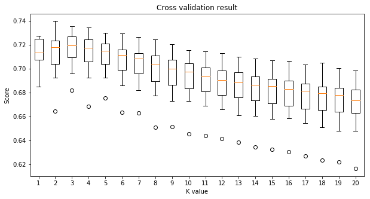

Assignment 2B: Visualizing Geodata
The graph below shows prostitution in San Fransico clustered using the k-means algorithm.
Note: Think carefully about how you can minimize the size of the file containing the data. My file is around 700KB. Why is the size of the file important?
The size of our file is around 725KB. Data structure was a simple csv file containing each cplnts' latitude, longitude, and their cluster id corresponds to K values.
The size of data matters since every time we change K, we have to process the data.